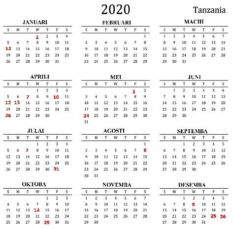
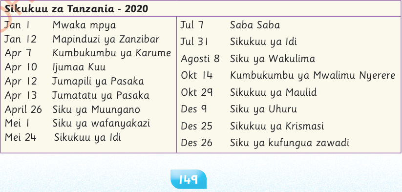

2020
Tanzania

Sikukuu za Tanzania - 2020
Jan 1
Mwaka mpya
Jul 7
Saba Saba
Jan 12
Mapinduzi ya Zanzibar
Jul 31
Sikukuu ya Idi
Apr 7
Kumbukumbu ya Karume
Agosti 8
Siku ya Wakulima
Apr 10
Ijumaa Kuu
Okt 14
Kumbukumbu ya Mwalimu Nyerere
Apr 12
Jumapili ya Pasaka
Okt 29
Sikukuu ya Maulid
Apr 13
Jumatatu ya Pasaka
Des 9
Siku ya Uhuru
April 26
Siku ya Muungano
Des 25
Sikukuu ya Krismasi
Mei 1
Siku ya wafanyakazi
Des 26
Siku ya kufungua zawadi
Mei 24
Sikukuu ya Idi